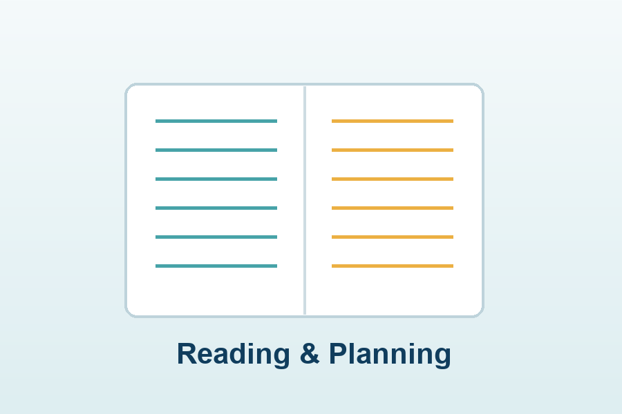

What I Enjoy
I like activities that keep the mind active and creative. Reading helps me understand new ideas, coding gives me a way to build things, and photography encourages me to notice details in ordinary places.
These hobbies also support my academic work because they improve focus, patience, and presentation skills.
Favorite Activities
Reading
Exploring technology, science, and personal development topics.
Coding
Practicing small web pages and data-related experiments.
Photography
Capturing simple compositions, textures, and campus moments.